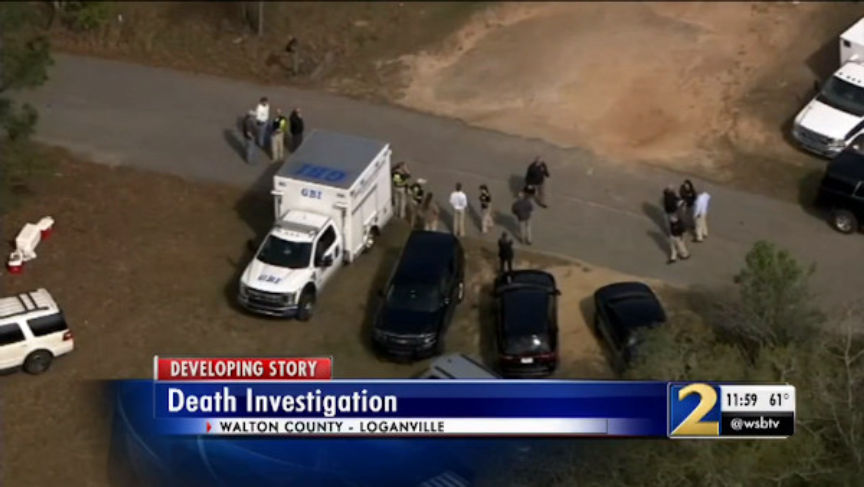
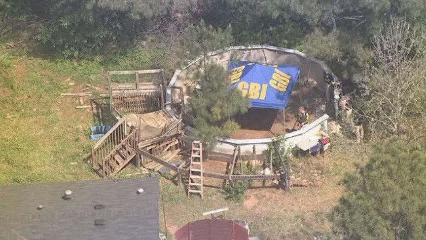
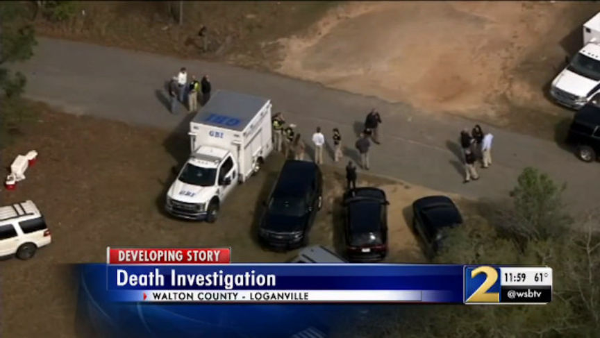
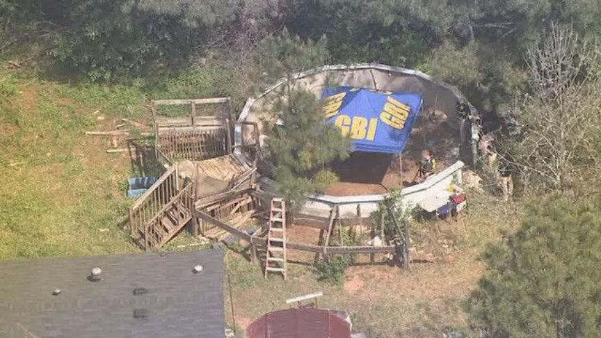

Georgia Xanax Vendor Sentenced to 20 Years in Prison
~4 min read | Published on 2020-08-10, tagged Darkweb-Vendor, Sentenced using 890 words.
A Georgia man responsible for the distribution of up to 200,000 counterfeit Xanax pills every month was sentenced 20 years in federal prison, according to an announcement from the United States Attorney for the Southern District of Georgia.
U.S. District Court Chief Judge J. Randal Hall sentenced Walker Christian Forrester to 240 months in prison for a charge of Conspiracy to Possess with Intent to Distribute and to Distribute Controlled Substances (Carfentanil, Alprazolam, and marijuana).
“The criminals in this drug trafficking conspiracy distributed massive amounts of dangerous illegal drugs, including deadly synthetic opioids, on the streets of Georgia and beyond through the Dark Web. Our federal, state, and local law enforcement agencies did outstanding work in investigating and shutting down these manufacturers of misery and bringing them to justice.”
-- U.S. Attorney Christine.
Federal investigators identified Forrester as the leader of a Georgia-based drug trafficking conspiracy. Three co-conspirators have already received prison sentences for their roles in the conspiracy and the remaining co-conspirators have entered guilty pleas for similar crimes.
Kolbie Watters was sentenced to life in prison plus ten years for Conspiracy to Possess with Intent to Distribute and to Distribute Controlled Substances, and Possession of a Firearm in Furtherance of a Drug Trafficking Crime. Jonathan Lester was sentenced to 210 months in prison for Conspiracy to Possess with Intent to Distribute and to Distribute Controlled Substances (Carfentanil, Alprazolam, and marijuana). Morgan Slaton was sentenced to three years’ probation for Conspiracy to Distribute and Possession with Intent to Distribute a Controlled Substance (Alprazolam). Armand Saedi pleaded guilty to Conspiracy to Possess with Intent to Distribute and to Distribute Controlled Substances (Alprazolam).
All defendants received an additional five years of supervised release following the completion of their prison sentences.
Although the group produced and distributed pills in 2016, they avoided the radar of investigators until September 2017 when Forrester ordered an additional industrial pill press. The purchase caught the attention of the Drug Enforcement Administration (DEA). The agency began investigating Forrester and the other co-conspirators by extension.
In November 2017, police officers in Harlem, Georgia, conducted a traffic stop on a vehicle driven by Forrester. Watters and a juvenile were also in the car. During a search of the vehicle, police officers found more than 5,200 counterfeit Xanax pills, a quantity of marijuana, and a sawed-off shotgun. It is unclear if Forrester legally owned the short-barreled shotgun.
The Bureau of Alcohol, Tobacco, Firearms, and Explosives (BATFE) requires owners of short-barreled shotguns (and short-barreled rifles) to complete a form and pay for a $200 tax stamp prior to owning the short-barreled firearm. Owning a short-barreled rifle or shotgun without the BATFE’s approval is a violation of the National Firearms Act (NFA). Forrester was never charged with a violation of the NFA. However, possession of any firearm while committing a drug trafficking crime is illegal (hence the Possession of a Firearm in Furtherance of a Drug Trafficking Crime charge).
Investigators learned that Forrester and his co-conspirators started manufacturing counterfeit Xanax pills and selling them on the darkweb in 2016. At the peak of their operation, the group produced and distributed more than 200,000 pills every month. The operation yielded profits of almost $20,000 every month during its peak.
Forrester also admitted receiving packages of fentanyl from China, repackaging the received narcotic, and then shipping the package to a darkweb vendor in Canada. The vendor in Canada paid Forrester $10,000 every month for this service. Although the announcement did not name the vendor in Canada, it did state that a federal grand jury in the Northern District of Georgia had indicted the Canadian drug trafficker.
There is a well-known case in the Northern District of Georgia that matches the description provided by the Southern District of Georgia’s announcement: United States v. Arden McCann, an alleged darkweb vendor from Canada. McCann, according to the indictment, sold alprazolam, fentanyl, and fentanyl analogs on almost every mainstream darkweb marketplace. Court documents accused McCann of operating an assortment of vendor accounts, including:
RCQueen; DRXanax; XanaxLabs; Pasitheas; TheMailMan; WhiteYellowGreen; and XanaxBlotters.
Although Forrester’s sentencing was announced as one of the final sentences in the government’s case against Forrester and his co-conspirators, two members of the group still face serious state charges.

In April 2018, the state of Georgia charged Lester and Watters with felony murder charges and aggravated assault charges in connection with the death of Chase David Loffler, a suspected co-conspirator living in Walton county. Lester and Watters are accused of beating and suffocating Loffler and burying his body in a shallow grave in Lester’s backyard.

The investigation into the homicide alone involved county, state, and federal law enforcement, including:
the Walton County Sheriff’s Office; the Federal Bureau of Investigation; the Drug Enforcement Administration; the Georgia Bureau of Investigation; and the United States Secret Service.
The list of agencies involved in the investigation into Forrester and his co-conspirators included a much larger list of law enforcement agencies under the Organized Crime Drug Enforcement Task Forces (OCDETF), including:
the Federal Bureau of Investigation; the Drug Enforcement Administration; the U.S. Food and Drug Administration’s Office of Criminal Investigations (FDA-OCI); the Internal Revenue Service (IRS) the U.S. Army Criminal Investigative Command (CID); the U.S. Postal Inspection Service (USPIS); Homeland Security Investigations (HSI); the U.S. Marshals Service; and the Harlem Department of Public Safety.
“These criminals’ days of selling poison, destroying lives, and spreading violence are over. HSI and its law enforcement partners worked tirelessly to bring an end to this criminal organization that profited by flooding the community with dangerous drugs."
-- HSI Acting Special Agent in Charge Robert Hammer
U.S. District Court Chief Judge J. Randal Hall sentenced Walker Christian Forrester to 240 months in prison for a charge of Conspiracy to Possess with Intent to Distribute and to Distribute Controlled Substances (Carfentanil, Alprazolam, and marijuana).
“The criminals in this drug trafficking conspiracy distributed massive amounts of dangerous illegal drugs, including deadly synthetic opioids, on the streets of Georgia and beyond through the Dark Web. Our federal, state, and local law enforcement agencies did outstanding work in investigating and shutting down these manufacturers of misery and bringing them to justice.”
-- U.S. Attorney Christine.
Federal investigators identified Forrester as the leader of a Georgia-based drug trafficking conspiracy. Three co-conspirators have already received prison sentences for their roles in the conspiracy and the remaining co-conspirators have entered guilty pleas for similar crimes.
All defendants received an additional five years of supervised release following the completion of their prison sentences.
Although the group produced and distributed pills in 2016, they avoided the radar of investigators until September 2017 when Forrester ordered an additional industrial pill press. The purchase caught the attention of the Drug Enforcement Administration (DEA). The agency began investigating Forrester and the other co-conspirators by extension.
In November 2017, police officers in Harlem, Georgia, conducted a traffic stop on a vehicle driven by Forrester. Watters and a juvenile were also in the car. During a search of the vehicle, police officers found more than 5,200 counterfeit Xanax pills, a quantity of marijuana, and a sawed-off shotgun. It is unclear if Forrester legally owned the short-barreled shotgun.
The Bureau of Alcohol, Tobacco, Firearms, and Explosives (BATFE) requires owners of short-barreled shotguns (and short-barreled rifles) to complete a form and pay for a $200 tax stamp prior to owning the short-barreled firearm. Owning a short-barreled rifle or shotgun without the BATFE’s approval is a violation of the National Firearms Act (NFA). Forrester was never charged with a violation of the NFA. However, possession of any firearm while committing a drug trafficking crime is illegal (hence the Possession of a Firearm in Furtherance of a Drug Trafficking Crime charge).
Investigators learned that Forrester and his co-conspirators started manufacturing counterfeit Xanax pills and selling them on the darkweb in 2016. At the peak of their operation, the group produced and distributed more than 200,000 pills every month. The operation yielded profits of almost $20,000 every month during its peak.
Forrester also admitted receiving packages of fentanyl from China, repackaging the received narcotic, and then shipping the package to a darkweb vendor in Canada. The vendor in Canada paid Forrester $10,000 every month for this service. Although the announcement did not name the vendor in Canada, it did state that a federal grand jury in the Northern District of Georgia had indicted the Canadian drug trafficker.
There is a well-known case in the Northern District of Georgia that matches the description provided by the Southern District of Georgia’s announcement: United States v. Arden McCann, an alleged darkweb vendor from Canada. McCann, according to the indictment, sold alprazolam, fentanyl, and fentanyl analogs on almost every mainstream darkweb marketplace. Court documents accused McCann of operating an assortment of vendor accounts, including:
Although Forrester’s sentencing was announced as one of the final sentences in the government’s case against Forrester and his co-conspirators, two members of the group still face serious state charges.

In April 2018, the state of Georgia charged Lester and Watters with felony murder charges and aggravated assault charges in connection with the death of Chase David Loffler, a suspected co-conspirator living in Walton county. Lester and Watters are accused of beating and suffocating Loffler and burying his body in a shallow grave in Lester’s backyard.

The investigation into the homicide alone involved county, state, and federal law enforcement, including:
The list of agencies involved in the investigation into Forrester and his co-conspirators included a much larger list of law enforcement agencies under the Organized Crime Drug Enforcement Task Forces (OCDETF), including:
“These criminals’ days of selling poison, destroying lives, and spreading violence are over. HSI and its law enforcement partners worked tirelessly to bring an end to this criminal organization that profited by flooding the community with dangerous drugs."
-- HSI Acting Special Agent in Charge Robert Hammer